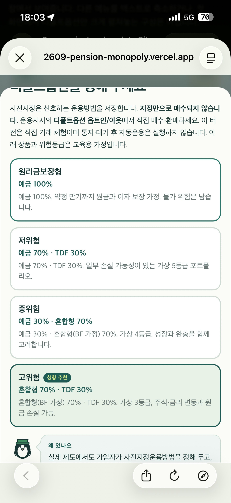
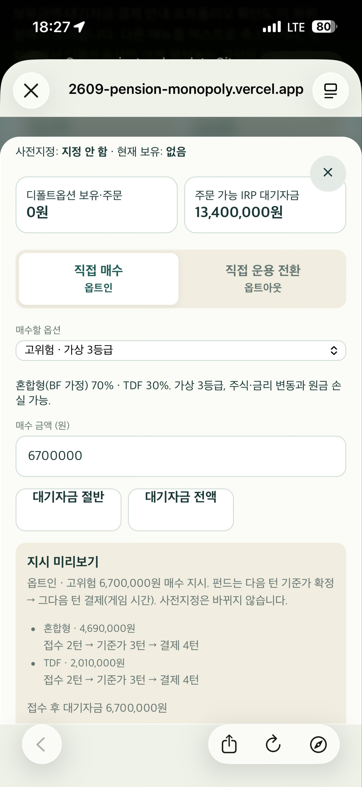
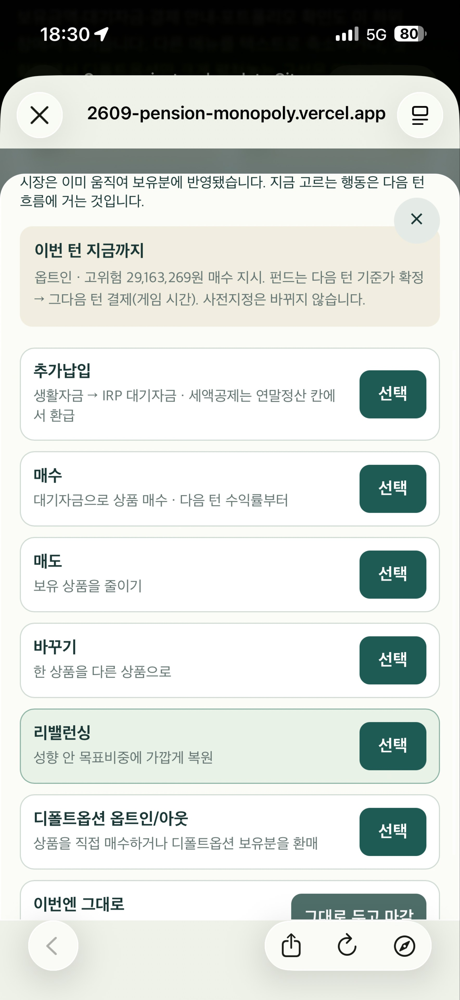

추천과 선택 분리
추천에는 작은 배지, 선택에는 체크·선택됨 문구·강조 테두리를 사용합니다. 시작 버튼에도 선택 상품명을 표시합니다.
디폴트옵션 추천·선택 구분, 모바일 버튼 디자인, 운용지시 비활성화와 사유 안내를 한 번의 개선 묶음으로 다룹니다. 아래 화면 시안은 눌러 볼 수 있으며 실제 게임이나 저장 데이터에는 영향을 주지 않습니다.
승인된 구현 플랜의 기록입니다. 실제 구현·검증 기록 · 아래 시안은 실제 게임과 독립적으로 동작합니다.
「무엇을 할까요?」의 일곱 카드와 순서를 유지합니다. 추천, 현재 선택, 실행 불가를 각각 다른 표시로 구분하고, 실행 불가 사유를 해당 카드에서 바로 읽게 합니다.
추천에는 작은 배지, 선택에는 체크·선택됨 문구·강조 테두리를 사용합니다. 시작 버튼에도 선택 상품명을 표시합니다.
금액 버튼은 2열 동일 너비로 배치합니다. 탭, 빠른 금액 선택, 실행 버튼의 역할과 선택 상태를 일관되게 표현합니다.
첫 행동 뒤 현재 자금·보유·주문을 기준으로 다시 판정합니다. 가능한 다른 행동은 계속 열어 둡니다.
권장 진행: 판정 로직을 먼저 정리하고, 세 화면 개선을 순차 적용한 뒤 한 번에 배포합니다. P0/P1은 작업 우선순위이며 별도 배포를 강제하는 구분은 아닙니다.
| 구분 | 이번 계획에서 바꾸는 내용 | 유지하는 내용 |
|---|---|---|
| 화면 | 선택 표시, 버튼 배치, 제한 사유, 하위 화면의 실행 버튼 상태 | 기존 카드형 메뉴, X/Esc 취소, 포트폴리오 왕복 |
| 규칙 | 기존 실행 조건을 공통 판정 함수로 모아 화면에서도 사용 | 거래 가능 조건, 행동 차감, 결제 시점, 성향·위험한도, 출처별 보유 |
| 저장·후속 범위 | 선택 초안과 표시의 일치, 복원 후 버튼 상태 재계산 | C/D/E 규칙과 c3 저장 형식, 자동운용·연결 매수 등 별도 P1 백로그 |
renderDefaultOptionCards는 추천 배지와 선택 상태를 따로 계산합니다. 다만 선택은 배경·테두리로만 드러납니다. 추천 배지도 녹색이고 hover도 테두리를 강조하므로 모바일에서는 서로 다른 상태가 비슷하게 보일 수 있습니다.
창을 열 때 유효한 현재 지정값·저장값·추천값을 기존 우선순위에 맞게 확인해 선택 초안을 한 번 초기화합니다. 카드 체크, 요약 문구, 확정 버튼, 실제 저장은 모두 이 초안을 참조합니다. 렌더와 확정에서 각각 다른 fallback을 계산하지 않게 합니다.
현재 추천은 5개 성향 모두 신·구 규칙에서 같지만, 호출 시 규칙 버전을 명시합니다. 허용 밖 저장값은 창을 여는 시점에 정리하고 사유를 안내해, 확정 순간 보이지 않던 상품으로 바뀌지 않게 합니다.
명시적 미지정: 설정의 현재 값이 「지정 안 함」이면 과거 저장값으로 덮어쓰지 않습니다. 최초 추천 표시를 위한 미초기화 상태와 사용자가 선택한 미지정 상태를 구분합니다. 「지정 안 함으로 시작」·「지정 해제」 경로는 유지합니다.
변경 파일: src/ui/default-option-view.ts, src/ui/app.ts, src/styles/main.css. 필요한 초안 해석 함수는 UI 보조 함수로 추가합니다.
「성향 추천」은 안내이고, 체크된 카드가 현재 선택입니다. 지정만으로 상품이 매수되지는 않습니다.
시안에서는 고위험을 추천하고 원리금보장형을 선택한 상태로 시작합니다. 추천 알고리즘을 실행하는 실제 게임 화면은 아닙니다.
| 상태 | 추천 배지 | 선택 표시 | 확정 결과 |
|---|---|---|---|
| 추천 고위험 / 선택 원리금보장형 | 고위험에 유지 | 원리금보장형에만 체크·선택됨 | 원리금보장형 지정 |
| 추천 고위험 / 선택 고위험 | 고위험에 유지 | 고위험에 추천·선택됨 모두 표시 | 고위험 지정 |
| 다른 카드로 선택 변경 | 추천 기준이 같으면 유지 | 이전 체크 해제, 새 카드만 체크 | 새 상품명과 버튼 일치 |
| 지정 안 함 / 창 닫기 | 안내로 볼 수 있음 | 미지정 또는 기존 지정 상태를 명확히 표현 | 미지정 명시 동작만 해제 처리, 단순 닫기는 저장하지 않음 |
버튼을 숨기지 않고 비활성화합니다. 기존 카드의 이름·설명을 유지하고, 제한된 카드 아래에 짧은 사유를 추가합니다. 이 판정은 두 번째 행동뿐 아니라 운용 화면이 열릴 때마다 현재 상태를 기준으로 적용합니다.
현재 첫 화면의 「선택」 버튼에는 실행 조건이 연결되어 있지 않습니다. 하위 화면도 일부 조건만 확인해, 예를 들어 리밸런싱 매도 정산 중에 일반 매도 버튼이 활성화된 채 엔진에서 거절될 수 있습니다. 첫 화면과 하위 확정 버튼이 같은 판정 근거를 쓰게 합니다.
대기자금 0원 ≠ 모든 행동 불가. 직접 보유 상품은 매도·교체할 수 있고, 미결제 주문이 없다면 보유분을 팔아 리밸런싱할 수도 있습니다. 디폴트옵션 보유분이 있으면 옵트아웃은 가능할 수 있습니다. 메뉴 하나의 특정 상품·금액이 실패한다는 이유로 전체 메뉴를 막지 않습니다.
생활자금과 납입 한도가 충분한 예시입니다. 실제 판정은 게임의 현재 장부에서 계산합니다.
이 시안의 「선택」은 가능 상태를 설명하며 거래를 실행하지 않습니다.
| 메뉴 | 선택 가능 조건 | 대표 비활성 사유 | 과도하게 막지 않을 조건 |
|---|---|---|---|
| 추가납입 | 생활자금과 남은 납입 한도 중 작은 금액이 10만원 이상 | 생활자금 부족 / 남은 납입 한도가 10만원 미만 | 세액공제 한도 소진만으로 납입을 막지 않음. 매매 결제 대기와도 별개 |
| 매수 | 리밸런싱 계획이 잠그지 않고, 성향·위험한도 안에서 10만원 이상 살 수 있는 상품이 하나 이상 | 대기자금 부족 / 리밸런싱 매도 정산 중 / 매수 가능한 상품 없음 | 특정 위험상품이 제한돼도 예금 등 가능한 상품이 있으면 메뉴 유지. 한도까지 부분 매수 가능하면 기존 확인 절차 유지 |
| 매도 | 계획 잠금이 없고, 직접 운용분 중 매도 가능한 상품이 10만원 이상 | 직접 매도할 잔고 없음 / 해당 상품 최소 거래금액 미달 | 옵션 구성품과 예약 환매분을 일반 매도 가능 잔고에 합산하지 않음. 별도 미결제 주문만으로 남은 직접 보유분을 막지 않음 |
| 바꾸기 | 일반 매도 가능한 출발 상품과 성향상 허용되는 다른 도착 상품 조합이 하나 이상 | 교체할 직접 보유분 없음 / 선택 가능한 다른 상품 없음 / 계획 잠금 | 대기자금이 없어도 기존 상품 환매로 접수 가능. 연결 매수 금액은 결제 시 다시 판단하며 대기자금으로 남을 수 있다는 기존 안내 유지 |
| 리밸런싱 | 모든 미결제 주문과 진행 계획이 없고 직접 운용분·대기자금 합계가 양수 | 접수 주문 정산 대기 / 리밸런싱할 직접 운용 자산 없음 | 대기자금이 0원이어도 직접 보유분이 있으면 가능. 이미 목표에 가깝다는 이유로 새 금지 규칙을 만들지 않음 |
| 디폴트옵션 옵트인/아웃 | 옵트인 또는 옵트아웃 중 하나라도 가능 | 옵션 주문 결제 대기 / 계획 잠금 / 매수 자금과 환매 보유분 모두 없음 | 매수 자금이 없어도 환매 가능하면 메뉴 유지하고 옵트아웃으로 진입 |
| 이번엔 그대로 | 현재 운용 행동을 선택할 수 있는 시점 | 턴이 끝나면 운용 메뉴 자체 종료 | 다른 메뉴가 모두 막혀도 마감 경로 유지. 2회 행동에서 남은 행동을 함께 마감하는 규칙 유지 |
| 상태 | 상위 카드 | 하위 탭 | 안내 |
|---|---|---|---|
| 매수 자금만 있음 | 활성 | 옵트인 활성 / 옵트아웃 비활성 | 환매할 디폴트옵션 보유분이 없습니다. |
| 환매할 보유분만 있음 | 활성 | 옵트아웃 활성 / 옵트인 비활성 | 매수할 대기자금이 부족합니다. |
| 둘 다 가능 | 활성 | 둘 다 활성, 유효한 기존 초안 탭 유지 | 새 진입의 기본 탭은 옵트인, 복귀는 선택했던 탭 우선 |
| 옵션 주문 결제 대기 | 비활성 | 현재 엔진 기준 두 거래 모두 제한 | 디폴트옵션 주문 결제 후 이용할 수 있습니다. 가능한 경우 결제 예정 턴 표시 |
| 둘 다 불가능, 원인이 다름 | 비활성 | 진입하지 않음 | 매수: 대기자금 부족 · 환매: 보유분 없음 |
옵트인은 성향에 맞는 옵션·10만원 이상 정수 금액·대기자금·현재 보유 옵션 종류를 확인합니다. 옵트아웃은 기존 previewDefaultOptOut의 50%/전량 기준을 그대로 사용합니다. 옵트아웃과 옵션 구성품에 일반 거래의 10만원 제한을 새로 적용하지 않습니다.
disabled 속성을 적용하고 「이용 불가」로 표시합니다. 카드 전체를 낮은 투명도로 만들어 사유까지 흐리게 하지 않습니다.aria-describedby로 연결하고, 사유 문장은 읽기 순서에도 포함합니다.자금 · 출처별 보유 · 미결제 · 진행 계획 · 행동 시점
기존 거래 함수의 조건을 순수 함수로 추출
메뉴는 가능한 선택의 존재, 상세는 입력값의 유효성
기존 실행 함수로 최종 검증 후 거래 반영
새 src/engine/action-availability.ts는 메뉴별 가능 여부와 사유를 반환합니다. 일반 거래의 공통 제약은 가칭 action-constraints.ts로 추출하고, 현재 policy-engine.ts와 옵션 미리보기 함수를 재사용합니다. 화면에서 에러 문구를 비교해 원인을 추정하거나 거래 조건을 별도로 복사하지 않습니다.
// 제안 인터페이스 · 아직 구현된 API가 아닙니다.
type Availability =
| { enabled: true; hint?: string }
| { enabled: false; code: BlockCode; reason: string };
getActionMenuAvailability(state): Record<MenuKey, Availability>
getDefaultTabAvailability(state): { in: Availability; out: Availability }
validateActionDraft(state, action): Availability
// 화면 진입 여부: 가능한 상품·금액 조합이 하나라도 있는가?
// 실행 버튼: 현재 선택한 상품·금액으로 접수할 수 있는가?
// 최종 확정: 실행 함수에서 현재 장부를 다시 검증한다.performAction을 시험 실행해 가능 여부를 구하지 않습니다. 메뉴 렌더 중 턴 마감·장부 기록·퀴즈·업적 흐름이 실행되지 않도록 별도 읽기 전용 검사만 사용합니다.canBuyForProfile, decideBuyAgainstRiskLimit를 재사용합니다. confirm 결과는 거절이 아니라 가능한 금액 확인 단계입니다.scopedHolding(state, productId), 옵션은 해당 scope의 잔고만 확인합니다. 평가액 전체와 지금 주문 가능한 잔고를 구분합니다.rebalancePlan이 남아 있는 매도 정산 단계는 일반 거래도 잠깁니다. 계획이 해제되고 매수 주문만 남으면 현재 엔진이 허용하는 다른 매매까지 일괄 잠그지 않습니다. 리밸런싱 재실행은 미결제 주문이 모두 없어야 합니다.| 내부 코드 예시 | 사용자에게 표시할 문구 |
|---|---|
INSUFFICIENT_IRP_CASH | 매수할 대기자금이 부족합니다. 최소 10만원이 필요합니다. |
CONTRIBUTION_LIMIT | 남은 납입 가능 금액이 10만원 미만입니다. |
NO_MANUAL_HOLDINGS | 직접 매도할 상품이 없습니다. 디폴트옵션 보유분은 옵트아웃을 이용하세요. |
DEFAULT_ORDER_PENDING | 디폴트옵션 주문 처리 중입니다. 4턴 결제 후 이용할 수 있습니다. |
REBALANCE_IN_PROGRESS | 리밸런싱 매도 주문 정산 중입니다. 정산 후 다시 거래할 수 있습니다. |
ORDERS_PENDING | 접수한 주문이 결제되면 리밸런싱할 수 있습니다. |
결제 시점이 12턴을 넘으면 기존 표현에 맞춰 「최종 정산」으로 안내합니다. 위 문구의 실제 턴·금액은 해당 상태에서 계산하며 고정값으로 넣지 않습니다.
| 파일 / 모듈 | 역할과 변경 내용 |
|---|---|
src/engine/action-constraints.ts신규 제안 | 최소 거래금액·납입 여력·진행 계획 등 공통 제약. 실행과 메뉴 판정이 공유. 옵션 내부 소액 주문 예외 유지 |
src/engine/action-availability.ts신규 제안 | 일곱 메뉴와 옵션 두 탭의 가능 여부·사유·진입 가능한 기본 탭 계산 |
game-engine.ts / portfolio-engine.ts / default-trade-engine.ts | 현재 검사 조건을 공유 가능한 함수로 추출. 접수 결과와 자금·결제·행동 차감 의미 유지 |
src/ui/app.ts | 추천 선택 초안 초기화·확정 일치, 메뉴 disabled/사유 연결, 재진입·초안·포커스 처리 |
default-option-view.ts / default-trade-view.ts / action-form.ts | 선택됨 표식, 상품명을 포함한 CTA, 탭별 가능 여부, 금액 버튼과 상세 확정 상태 |
src/styles/main.css | 추천·선택·포커스·비활성 시각 체계, 전용 2열 버튼, 입력과 select 크기 |
tests/action-availability.test.ts 등 | 상태별 판정과 실행 결과 일치, UI 상태 갱신 및 기존 회귀 보완 |
scripts/build-learning-guide.ts | 사용자·운영자 매뉴얼에 선택 표시와 제한 사유 읽는 법 추가. 금융 규칙·퀴즈 정답은 변경하지 않음 |
| 순서 | 작업 | 진행 전 확인 / 완료 결과 |
|---|---|---|
| 1 · P0 | FB-003의 실행 조건표 확정 및 공통 판정 함수 | 현재 엔진의 허용·거절 사례를 먼저 테스트로 고정. UI에 붙이기 전 거래 결과 불변 확인 |
| 2 · P0 | FB-001 추천·선택 분리와 초안 일치 | 추천/선택이 같거나 다른 경우, 미지정, 설정·시작·성향 변경을 확인 |
| 3 · P1 | FB-002 전용 버튼·입력·상태 스타일 | 전용 2열 적용. 기존 3버튼 화면은 그대로인지 확인. 최소금액 미달 프리셋과 직접 입력 표시 확인 |
| 4 · P0 통합 | FB-003을 일곱 메뉴·하위 탭·확정 버튼에 연결 | 첫 행동 → 남은 행동의 상태 갱신. 가능한 다른 행동 보존. 복귀·재접속에도 같은 상태 |
| 5 · 통합 검증 | 전체 테스트·빌드·린트·자동 플레이·모바일 실플레이 | 아래 완료 기준 통과 후 매뉴얼·백로그 갱신 |
| 6 · 배포 | 한 PR로 main 병합 후 v1.5.1 배포 | 운영 주소에서 시작·2회 운용·이어하기 확인. 상태를 「검증 완료」로 변경 |
추천 브랜치명은 codex/playtest-feedback-001-003입니다. 로직·선택 표시·버튼/UI 연결을 검토 가능한 단위로 커밋하되 한 묶음으로 릴리스합니다. 이 문서 작성 단계에서는 게임 소스를 수정하거나 배포하지 않습니다.
테스트는 클래스 이름 자체보다 행동과 금액·선택·거절 결과를 확인합니다. 픽셀 모양은 브라우저 및 실제 기기에서 확인합니다.
# 실제 구현 뒤 수행할 검증 — 현재 계획 작성의 실행 결과가 아닙니다.
npm test
npm run build
npm run lint
npm run verify:default
# 거래 조건 추출의 회귀 확인
# - 같은 입력에서 접수 성공/거절과 잔고·주문·행동 차감 일치
# - 5,600판 검증의 유한 잔고·종료·미결제·출처 장부 검사 유지출시 완료 기준: 세 항목 모두 구현·검증을 마치고, 제한 사유를 보기 위해 실행 실패를 겪을 필요가 없어야 합니다. 동시에 현행 규칙상 가능한 행동을 새 UI가 막는 사례가 없어야 합니다.
현재 체크아웃의 코드와 사용자가 첨부한 세 화면을 기준으로 작성했습니다. 새로운 금융 제도·금리·상품 규칙을 제안하는 작업은 아닙니다.
| 현재 코드 위치 | 확인한 사실 |
|---|---|
default-option-view.ts:29 | 추천값과 picked를 구분하지만 선택됨 문구 없음 |
app.ts:389 / 521 / 1288 | 선택·확정 fallback이 여러 곳에 있음. 상위 운용 버튼은 조건 없이 렌더 |
main.css:132 / 724 / 886 | 공통 3열 프리셋, 선택·hover 테두리, 옵션 전용 탭 스타일 확인 |
portfolio-engine.ts:20 / 104 / 185 | 계획 잠금, 교체 접수와 결제 시 재판정, 리밸런싱 미결제 차단 |
default-trade-engine.ts:18 / 26 / 48 | 옵트인·아웃 공통 잠금과 서로 다른 자금/보유 조건 |
game-engine.ts:326 | 생활자금·납입 한도·10만원 기준으로 추가납입 승인 |


